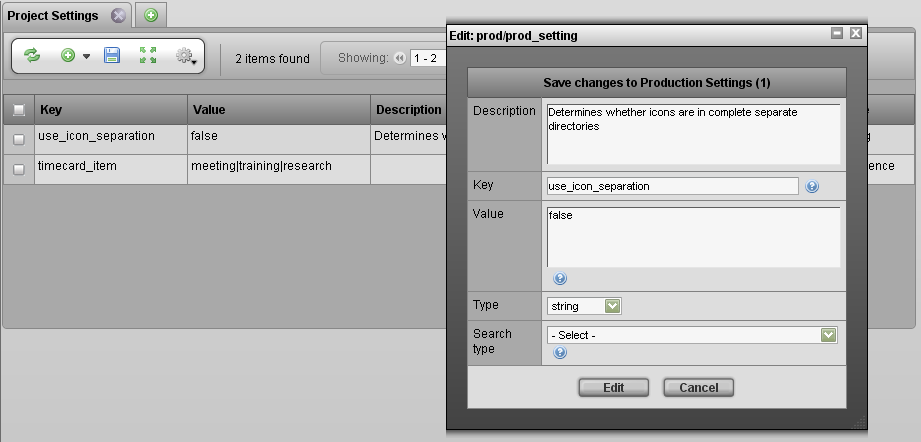

Use the Project Settings tab to control the various options that exist within TACTIC. Most project settings are defined to work with the widgets that use them and when defined, the "Type" property specifies how the "Value" property is delivered to the widget. The different types of settings are outlined below.
Note
The overall items in the sequence or map are separated with a pipe | character and the value:label are separated with a Colin : character
Most settings are types of "sequences" that appear in TACTIC as a drop-down. For example, the notes_dailies_context setting defines the different kinds of context you can use in entering notes for dailies.
To insert a project setting, click the insert button in the view.

The properties for the project setting search type are listed below:
Description | A description of the purpose of the project settings |
Key | This property serves as the code identifier of the setting |
Value | The Values for the setting. |
Type | The type of data definition of the value data. This tells the widget begin delivered the value how the data should be displayed. |
Search Type | A search type to associate the project setting to, this help further filter the settings. |
Any widgets that make use of a new project setting not yet defined in TACTIC will prompt the user to insert data for a new project setting.
Commonly Project Setting Examples
This table lists the some commonly used project settings in TACTIC.
| key | Description | Default Value | Type |
|---|---|---|---|
flash_output_format | Output format for a Flash project, swf OR mov | swf | string |
fps | Frames per second | 24 | string |
handle_texture_dependency | Handle texture dependencies when performing a checkin in a 3D application. Accepted values are true, false, optional. | true | string |
notes_dailies_context | Notes context used in the Dailies tab | anim|effects|model | sequence |
shot_hierarchy | Shot hierarchy structure. Accepted values are episode_sequence or sequence. | sequence | string |
bin_label | Label for a Bin | n/a | string |
bin_type | Type of Bin | n/a | string |
web_file_size | dimension of the web type file size, e.g. 640x480 | 640x480 | string |
thumbnail_protocol | The protocol through which the link of a thumbnail is opened. Accepted values are file, http. | http | string |
versionless_mode | The global setting for copy or symlink for versionless check-ins | copy | string |